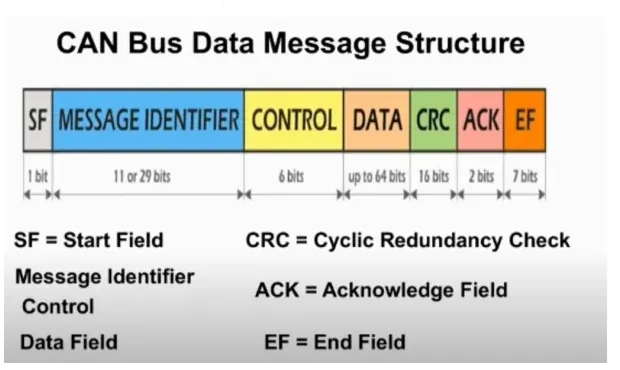
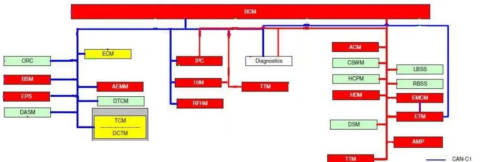

CAN, LIN & Automotive Ethernet¶
Modern vehicles contain dozens of electronic control units (ECUs) that must exchange data constantly. Instead of point-to-point wiring between every pair of ECUs, vehicles use shared communication buses. This article covers the three technologies you will meet throughout the bootcamp:
- CAN — the workhorse for powertrain, chassis and body communication
- LIN — the cheap, slow bus for simple actuators and sensors
- Automotive Ethernet — the high-bandwidth backbone for cameras, ADAS and software-defined vehicles
CAN — Controller Area Network¶
CAN is a broadcast bus: every message is sent to the whole network, and each node decides for itself which messages to read. It was designed for deterministic communication in distributed systems and provides:
- message prioritization with guaranteed maximum latency for the highest-priority message,
- multicast communication with bit-oriented synchronization,
- system-wide data consistency (a message is either accepted by all nodes or by none),
- multi-master access — any node may start transmitting when the bus is free,
- sophisticated error detection, signalling and automatic retransmission of corrupted messages,
- fault confinement: defective nodes switch themselves off the bus.
Typical CAN speeds range from 20 kbit/s to 1 Mbit/s; the achievable rate depends on bus length and transceiver speed.
Physical layer¶
Each node connects to the two-wire differential bus (CAN-H and CAN-L) through a transceiver — a transmitting/receiving amplifier that converts between the controller's logic levels and the bus's electrical levels.
Two electrical rules matter in practice:
- Termination. To avoid signal reflections, both ends of the bus carry a 120 Ω termination resistor (per ISO 11898 for high-speed CAN), and stub lines to nodes are kept short.
- Dominant vs. recessive bits. CAN uses a differential voltage: a small difference between CAN-H and CAN-L is the recessive state (logic 1); a clearly driven difference is the dominant state (logic 0). Because dominant bits electrically override recessive ones, a node transmitting a recessive bit while another transmits a dominant bit will read back dominant — this is the physical basis of arbitration.
The maximum bus length and the bit rate are directly coupled: the bit time must be long enough for the signal to propagate to the farthest node and back within one bit, so long buses force lower bit rates.
The CAN data frame¶

A CAN data frame carries up to 8 bytes of payload (64 in CAN FD) with this layout:
| Field | Size | Purpose |
|---|---|---|
| SOF (start of frame) | 1 bit | Synchronizes all nodes |
| Identifier | 11 bits (standard) or 29 bits (extended) | Identifies the content, sets priority |
| Control | 6 bits | 2 reserved bits + 4-bit DLC (payload length in bytes) |
| Data | 0–8 bytes | The payload |
| CRC | 15 bits + delimiter | Integrity check over SOF…data |
| ACK | 2 bits | Receivers pull the slot dominant to acknowledge |
| EOF | 7 bits | End of frame |
| Interframe space | ≥ 3 bits | Bus idle before the next frame |
CAN frames carry no sender/receiver addresses — the identifier describes the meaning of the data (e.g. "vehicle speed"), and every node filters the identifiers it cares about.
The other frame types are:
- Remote frame — asks the owning node to send the data frame with a given identifier; same format, empty data field, DLC set to the requested length.
- Error frame — transmitted by any node that detects an error, forcing all nodes to discard the current message.
- Overload frame — flow control, asking for extra delay between frames (rarely seen in practice).
Arbitration: who wins the bus¶
When several nodes start transmitting at the same time, they write their identifiers onto the bus bit by bit, starting from the most significant bit. Since dominant (0) overrides recessive (1), a node that sends a recessive bit but reads back dominant knows it has lost and immediately stops transmitting — the message with the lowest identifier wins without any bits being destroyed or re-sent.
sequenceDiagram
participant A as ECU A (ID 0x2F1)
participant B as ECU B (ID 0x1A0)
participant BUS as CAN bus
Note over A,B: Both start transmitting simultaneously
A->>BUS: ID bits 0 1 0 1 1 1 1 0 0 0 1
B->>BUS: ID bits 0 0 1 1 0 1 0 0 0 0 0
Note over BUS: Bit 2: B sends 0 (dominant), A sends 1 (recessive)
BUS-->>A: reads dominant → A loses arbitration
Note over A: A switches to receive,<br/>retries after bus idle
Note over B: B's message continues undisturbedPriority is in the identifier
Low numeric identifier = high priority. When designing a network, assign the lowest IDs to the most safety- or time-critical messages (e.g. braking, steering) — a poorly allocated ID map can make a critical message systematically late on a loaded bus.
Error detection and confinement¶
Every node monitors the bus while it transmits and applies five detection mechanisms: bit errors (read-back mismatch), stuff errors (6 identical bits in a row — CAN inserts an opposite bit after every 5 identical ones), CRC errors, form errors (fixed-format fields with wrong values) and ACK errors (nobody acknowledged).
Each node keeps a Transmit Error Counter and a Receive Error Counter (+8 for a corrupted transmission, −1 for a successful one, with several detailed rules). The counters drive a three-state machine:
stateDiagram-v2
[*] --> ErrorActive
ErrorActive --> ErrorPassive: TEC or REC > 127
ErrorPassive --> ErrorActive: TEC and REC ≤ 127
ErrorPassive --> BusOff: TEC > 255
BusOff --> ErrorActive: recovery (128 × 11 recessive bits)- Error active — normal operation; the node sends active error flags and disrupts the faulty frame immediately.
- Error passive — the node sends passive error flags and waits longer before retransmitting, so it disturbs the bus less.
- Bus off — the node disconnects itself from the bus until a recovery sequence completes. This is what prevents one broken ECU from killing the whole network.
DBC files: giving raw frames meaning¶
A raw CAN trace is just identifiers and bytes. The network specification that maps them to physical signals is the DBC (Database CAN) file. Each network has its own DBC listing:
- every ECU on the bus,
- every transmitted/received message with its identifier, DLC and sending mode (cyclic, on event, …),
- the signal layout inside each message's data field: start bit, length, byte order, scaling factor and offset, unit, and value tables.
You will use DBC files constantly in MIL2 (CANalyzer/CANoe) — they are what turns
0x1A0: 3F 20 … into "Vehicle speed = 128.5 km/h".
CAN in the vehicle¶
A real vehicle carries several CAN buses separated by bandwidth and criticality:
| Bus | Bit rate | Typical content |
|---|---|---|
| C-CAN | 500 kbit/s | Powertrain/EOBD-relevant ECUs |
| BH-CAN | 125 kbit/s | Body high |
| B-CAN | 50 kbit/s | Body, comfort |
| CAN FD | up to ~5–15 Mbit/s data phase | High-bandwidth ECUs |

The diagnostic socket (EOBD/OBD-II connector, usually near the steering column) is your physical access point: 16 pins, with pins 6/14 for the diagnostic CAN, pins 4/5 ground and pin 16 battery +12 V.
LIN — Local Interconnect Network¶
LIN exists because CAN is overkill (and too expensive) for a window motor or a rain sensor. It is a single-wire serial bus for non-critical subsystems:
- single master, up to 16 slaves — the master controls all communication,
- up to 19.2 kbit/s over up to 40 m,
- variable payload of 2, 4 or 8 bytes,
- checksum error detection and defective-node detection,
- 12 V operation (battery level, not differential): dominant ≈ 0 V is logic 0, recessive ≈ +12 V is logic 1. The master pulls the bus up through 1 kΩ, slaves through ~30 kΩ.
Frame structure¶
Every LIN frame is initiated by the master with a header; a slave (or the master itself) then sends the response:
| Part | Sender | Contents |
|---|---|---|
| Break | master | ≥ 13 dominant bits — marks frame start |
| Sync field | master | byte 0x55 — slaves synchronize their clocks to it |
| Identifier | master | 6-bit frame ID (0–59 normal, 60–61 diagnostic) |
| Data | slave | 1–8 data bytes |
| Checksum | slave | inverted sum over the data bytes |
On receiving a header, each slave checks the ID: one of them publishes the response, the others may subscribe to it.
Schedule tables and frame types¶
The master's schedule table (defined in the network's LDF — LIN Description File, the LIN counterpart of a DBC) fixes the sequence and time grid of the frames. This guarantees that the bus is never overloaded and that every signal gets its periodicity. Frame types include:
- Unconditional frames — the normal cyclic communication; the master sends the header in its slot and the designated slave fills in the data.
- Sporadic frames — sent only when the master knows a slave has updated data.
- Diagnostic frames — IDs 60/61; a master request with first data byte 0 is the go-to-sleep command.
LIN networks sleep and wake to save power: the master can force all slaves to sleep, and any slave can wake the bus by holding it dominant (the wake-up break), which the master detects.
Typical LIN applications: power windows, door locks, seats, mirrors, wipers, seat heaters, climate flaps, interior lights, steering-wheel buttons — e.g. a body control module as master with defrost, air-recirculation and air-quality slaves.
Automotive Ethernet¶
CAN and LIN top out far below what cameras, radar fusion and over-the-air updates need. Automotive Ethernet brings standard IP networking into the vehicle, with 100 Mbit/s–1 Gbit/s over a single unshielded twisted pair (100BASE-T1 / 1000BASE-T1) and a switched (star) topology instead of a shared bus.
Key differences from CAN thinking:
- Addressing instead of broadcast filtering — frames carry source and destination MAC addresses; switches forward traffic only where it is needed.
- Encapsulation stack — application data is wrapped in TCP or UDP (transport), then IP (network), then Ethernet (data link) — the OSI layers you know from IT, minus the session/presentation layers.
- Service-oriented communication — with SOME/IP (and its service discovery, SOME/IP-SD) ECUs offer services that others subscribe to (publish/subscribe with events and notifications), rather than broadcasting fixed signal layouts.
flowchart LR
subgraph Sender ECU
A[Application data] --> B[SOME/IP header]
B --> C[TCP or UDP segment]
C --> D[IP packet]
D --> E[Ethernet frame]
end
E --> S((Switch)) --> R[Receiver ECU]Protocols you will meet later that ride on this stack: DoIP (diagnostics over IP), FOTA (firmware over the air), gPTP (time synchronization), AVB/TSN (audio-video and time-sensitive traffic).
Choosing the right bus¶
| LIN | CAN | Automotive Ethernet | |
|---|---|---|---|
| Bandwidth | 19.2 kbit/s | 125 k–1 Mbit/s (FD: more) | 100 M–1 Gbit/s |
| Wiring | 1 wire | 2-wire differential | 1 twisted pair, switched |
| Access scheme | master/slave | multi-master, CSMA/CD+AMP (arbitration) | switched, full duplex |
| Cost per node | lowest | low | higher |
| Typical use | body actuators/sensors | powertrain, chassis, body | cameras, ADAS, backbones |
Key takeaways
- CAN = broadcast, content-addressed by identifier; lowest ID wins arbitration because dominant beats recessive.
- CAN protects itself: 5 error types, error counters, and the active → passive → bus-off confinement ladder.
- DBC files decode raw CAN frames into named, scaled physical signals.
- LIN = cheap single-wire master/slave bus driven by LDF schedule tables.
- Ethernet brings IP networking in-vehicle: MAC addressing, switches, TCP/UDP, SOME/IP services, DoIP diagnostics.
Where this leads
You will read live CAN traffic in CANalyzer, script node behavior in CAPL, and diagnose ECUs over these buses in the Diagnosis lessons.
Source material¶
This article was distilled from the academy lesson materials:
- Academy Kineton Format - Network CAN LIN — PDF, 2.2 MB
- Ethernet old version — PDF, 1.5 MB
- eth pres rev1 — PDF, 1.9 MB